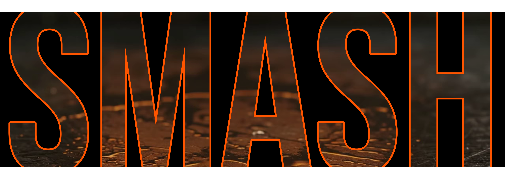

Asset: demo/smashcrew/assets/smash-typographic-art.png — 3844×1368 px,
pure black background, texture inside the glyphs taken from the real sizzle video
(assets/video-piastra.webm), single #FF5500 stroke, ember glow baked in.

<div class="relative flex justify-center items-center w-full">
<img
src="assets/smash-typographic-art.png"
alt="SMASH typographic artwork"
class="w-full max-w-4xl object-contain filter drop-shadow-[0_0_25px_rgba(255,85,0,0.4)]"
/>
</div>
<link href="https://fonts.googleapis.com/css2?family=Bebas+Neue&display=swap" rel="stylesheet">
<div class="smash-typographic">SMASH</div>
<style>
.smash-typographic {
font-family: 'Bebas Neue', 'Anton', Impact, sans-serif;
font-weight: 900;
text-transform: uppercase;
font-size: clamp(96px, 24vw, 380px);
line-height: 0.9;
text-align: center;
color: transparent;
-webkit-text-stroke: 2px #FF5500;
filter: drop-shadow(0 0 15px rgba(255, 85, 0, 0.7));
/* optional photographic fill (static texture only): */
/* background: url('assets/patty-frame.jpg') center/cover;
-webkit-background-clip: text; background-clip: text; */
}
</style>
Note on Snippet B: with background-clip: text the fill is a static
texture frame and the stroke stays vector-sharp; the moving sizzle video inside the letters
remains exclusive to the canvas engine in index.html.
cd demo/smashcrew && python compose_smash_asset.py
Inputs: assets/fonts/BebasNeue-Regular.ttf (OFL license) and
assets/patty-frame.png (frame 0 of the sizzle video).